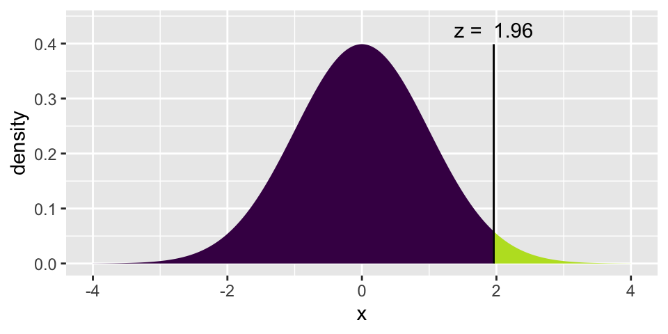

Chapter 4 Inference for categorical data
4.1 Inference for a single proportion
Previously, we used the normal approximation to describe the distribution of different values for \(\hat{p}\) when random samples are taken. We learned that the central limit theorem describes the distribution such that if (see box in section 3.1.1 on page 124):
- we take random, independent samples
- \(np \geq 10\) and \(n(1-p) \geq 10\)
then \[\hat{p} \sim N(p, \sqrt{p(1-p)/n}).\]
If the \[\mbox{Z score} = \frac{\hat{p} - p}{\sqrt{p(1-p)/n}}\] is bigger than the \(Z^*\) value at a particular value of \(\alpha\), then we know we can reject \(p\) (the Null Hypothesis value) as the true population parameter.
If an interval estimate is desired, and no \(p\) is hypothesized, then a confidence interval is created using:
\[\hat{p} \pm Z^* \cdot \sqrt{\hat{p}(1-\hat{p})}/n.\]
IMPORTANT: recall, the above interval is a method for capturing the parameter.
4.2 2/18/20 Math 58 Agenda
- Math 58 Only
- Binomial distribution
4.3 2/20/20 Math 58 Agenda
- Math 58 Only
- Binomial hypothesis testing
- Power
- Confidence Intervals
4.4 Binomial distribution (Math 58 only)
Math 58 (not Math 58B) will cover the binomial distribution which describes the exact probabilities associated with binary outcomes.
Diez, Barr, and Çetinkaya-Rundel (2014) do not discuss the binomial distribution. Chance and Rossman (2018), however, provide quite a bit of detail about the binomial concepts in chapter 1.
4.4.1 Example: pop quiz
There are 5 problems on this quiz; everyone number their papers 1. to 5. Each of the problems is multiple choice with answers A, B, C, or D. Go ahead. We’ll grade the papers when everyone is done.
Solution: 1.B, 2.C, 3.B, 4.C, 5.A
The binomial distribution provides the probability distribution for the number of “successes” in a fixed number of independent trials, when the probability of success is the same in each trial.
- Outcome of each trial can be stated as a success / failure.
- The number of trials (\(n\)) is fixed.
- Separate trials are independent.
- The probability of success (\(p\)) is the same in every trial.
\[\begin{eqnarray*} P(X=k) &=& {n \choose k} p^k (1-p)^{n-k}\\ {n \choose k} &=& \frac{ n!}{(n-k)! k!} \end{eqnarray*}\]
In our example… \(n=5\). How many ways are there to get 2 successes? \[\begin{eqnarray*} {5 \choose 2} &=& \frac{ 5!}{2! 3!} = \frac{ 5 \cdot 4 \cdot 3 \cdot 2 \cdot 1}{(3 \cdot 2 \cdot 1)(2 \cdot 1)} \end{eqnarray*}\]
The numerator represents the number of possibilities for each of the 5 questions. But we don’t distinguish between successes, so we don’t want to double count those. Similarly for failures.
| SSSFF | SSFFS | SSFSF | SFFSS | SFSFS |
| SFSSF | FFSSS | FSFSS | FSSFS | FSSSF |
In class: different groups work out the probability of 0, 1, 2, … 5 correct answers.
\[\begin{eqnarray*} P(X=0) = {5 \choose 0} (0.25)^0(0.75)^5 = 0.2373 && P(X=3) = {5 \choose 3} (0.25)^3(0.75)^2 = 0.0879\\ P(X=1) = {5 \choose 1} (0.25)^1(0.75)^4 = 0.3955 && P(X=4) = {5 \choose 4} (0.25)^4(0.75)^1 = 0.0146\\ P(X=2) = {5 \choose 2} (0.25)^2(0.75)^3 = 0.2637 && P(X=5) = {5 \choose 5} (0.25)^5(0.75)^0 = 0.0010\\ \end{eqnarray*}\]

## [1] 0.8964844
## [1] 0.9843754.4.2 Binomial Hypothesis Testing
Consider the example from the beginning of the semester on babies choosing the helper toy (instead of the hinderer), section 2.3. Recall that 14 of the 16 babies chose the helper toy.
Does the binomial distribution apply to this setting? Let’s check:
- two choices? Yes, helper or hinderer.
- fixed \(n\)? Yes, there were 16 babies.
- \(p\) same? Presumably. There is some inherent \(p\) which represents the probability that a baby would choose a helper toy. And we are choosing babies from a population with that \(p\).
- independent? I hope so! These babies don’t know each other or tell each other about the experiment.
If there really had been no inclination of the babies to choose the helper toy, how many babies would the researchers have needed to choose the helper in order to get published?
Let’s choose \(\alpha = 0.01\). That means that if \(p=0.5\), then we should make a Type I error less than 1% of the time. From the calculations below, we see that the rejection region is \(\{ X \geq 14 \}\). That is, for the researchers to reject the null hypothesis at the \(\alpha = 0.01\) significance level, they would have needed to see 14, 15, or 16 babies choose the helper (out of 16).
\[\begin{eqnarray*} P(X \geq 12) &=& {16 \choose 12} (0.5)^{12}(0.5)^{4} + 0.0106 = 0.0384\\ P(X \geq 13) &=& {16 \choose 13} (0.5)^{13}(0.5)^{3} + 0.00209 = 0.0106\\ P(X \geq 14) &=& {16 \choose 14} (0.5)^{14}(0.5)^{2} + 0.000259 = 0.00209\\ P(X \geq 15) &=& {16 \choose 15} (0.5)^{15}(0.5)^{1} + 0.0000153 = 0.000259\\ P(X = 16) &=& {16 \choose 16} (0.5)^{16}(0.5)^{0} = 0.0000153\\ \end{eqnarray*}\]

## [1] 0.9893646## [1] 0.99790954.4.3 Binomial Power
Let’s say that the researchers had an inkling that babies liked helpers. But they thought that probably only about 70% of babies preferred helpers. The researchers then needed to decide if 16 babies was enough for them to do their research. That is, if they only measure 16 babies, will they have convincing evidence that babies actually prefer the helper? Said differently, with 16 babies, what is the power of the test?
\[\begin{eqnarray*} \mbox{power} &=& P(X \geq 14 | p = 0.7)\\ &=& P(X=14 | p=0.7) + P(X = 15 | p=0.7) + P(X = 16 | p=0.7)\\ &=& {16 \choose 14} (0.7)^{14}(0.3)^{2} + {16 \choose 15} (0.7)^{15}(0.3)^{1} + {16 \choose 16} (0.7)^{16}(0.3)^{0}\\ &=& 0.099 \end{eqnarray*}\]
Yikes! What if babies actually prefer the helper 90% of the time?
\[\mbox{power} = P(X \geq 14 | p = 0.9) = 0.789\]
## [1] 0.09935968
## [1] 0.78924934.4.4 Binomial Confidence Intervals for \(p\)
The binomial distribution does not allow for the “plus or minus” creation of a range of plausible values for the confidence interval. Instead, hypothesis testing is used directly to come up with plausible values for the parameter \(p\). The method outlines below is much more tedious than the z - CI , but it does produce an exact interval for \(p\) with the appropriate coverage level.
Consider a confidence interval created in the following way:
- Step 1: Collect data, calculate \(\hat{p}\) for that particular dataset.
- Step 2: Test a series of values for \(p'\) using the observed \(\hat{p}\) from the dataset at hand.
- Step 3: List all the values for \(p'\) that were not rejected. Sort them and find the smallest and biggest value: (\(p_{small}, p_{big}\)).
Ask yourself whether the true parameter (let’s call it \(p\)) is in the interval.
- If a type I error was made when \(p\) was tested, then \(p\) is not in the interval.
- If \(p\) was not rejected, then it is in the interval.
How often will a type I error be made? 5% of the time. Therefore (\(p_{small}, p_{big}\)) is a 95% CI for the true population parameter \(p\).
4.5 2/18/20 Math 58B Agenda
- Math 58B Only
- Relative Risk
- Odds Ratios
- Case-control studies
4.6 2/20/20 Math 58B Agenda
- Math 58B Only
- CI for relative risk
- CI for odds ratios
4.7 Relative Risk (Math 58B only)
Math 58B (not Math 58) will cover relative risk, the ratio of two success proportions.
Previously (e.g., Gender discrimination example, 3.2) when working with the proportion of success in two separate groups, the proportion of success was subtracted (see also lab 4). Next week, differences in proportions will be revisited, see section 4.10. First up, the new statistic of interest will be relative risk, followed by odds ratios.
In particular, interest is in the ratio of probabilities. [Note: the decision to measure a ratio instead of a difference comes with trying to model the particular research question at hand. There is nothing inherently better about ratios versus differences. It is, however, often easier to think about how a small probability changes if it is done as a ratio instead of a difference.]
\[\mbox{Relative Risk (RR)} = \frac{\mbox{proportion of successes in group 1}}{\mbox{proportion of successes in group 2}}\]
4.7.1 Inference on Relative Risk
Due to some theory we won’t cover, there is a fairly good mathematical approximation which describes how the natural log of the relative risk varies from sample to sample:
\[\ln(\hat{RR}) \stackrel{\mbox{approx}}{\sim} N\Bigg(\ln(RR), \sqrt{\frac{1}{A} - \frac{1}{A+C} + \frac{1}{B} - \frac{1}{B+D}}\Bigg)\]
| explanatory 1 | explanatory 2 | |
|---|---|---|
| response 1 | A | B |
| response 2 | C | D |
- Statistic: \[\hat{p}_1 / \hat{p}_2 = \frac{A/(A+C) }{B/ (B+D)}\]
- Null Hypothesis: \[H_0: p_1/p_2 = 1\]
- CI: The CI is for the true relative risk in the population, \(p_1/p_2\)
\[\mbox{exponentiate} \Bigg[ \ln(\hat{p}_1/\hat{p}_2) \pm z^*\sqrt{ \frac{1}{A} - \frac{1}{A+C} + \frac{1}{B} - \frac{1}{B+D}}\Bigg]\]
To remember with relative risk:
The percent change is defined as: \[\begin{eqnarray*} (RR - 1)*100\% = \frac{\hat{p}_1 - \hat{p}_2}{\hat{p}_2}*100\% = \mbox{percent change from 2 to 1} \end{eqnarray*}\]
The CI for \(p_1/p_2\) is typically considered significant if 1 is not in the interval. That is because usually the null hypothesis is \(H_0: p_1 = p_2\) or equivalently, \(H_0: p_1/p_2 = 1\).
4.7.2 Using infer for inference on RR
As with the difference in proportions, the infer syntax can be used to simulate a sampling distribution of the sample relative risk under the null hypothesis that the population proportions are identical.
NOTE in order to provide syntax that was comparable and correct for the RR and the OR, smoking has been specified as the response variable, and lungs has been specified as the explanatory variable.
library(infer)
WynderGraham <- data.frame(lungs = c(rep("cancer", 605), rep("healthy", 780)),
smoking = c(rep("light", 22), rep("heavy", 583),
rep("light", 204), rep("heavy", 576)))
(obs_RR <- WynderGraham %>%
specify(smoking ~ lungs, success = "heavy") %>%
calculate(stat = "ratio of props", order = c("cancer", "healthy")))## # A tibble: 1 x 1
## stat
## <dbl>
## 1 1.30null_RR <- WynderGraham %>%
specify(smoking ~ lungs, success = "heavy") %>%
hypothesize(null = "independence") %>%
generate(reps = 1000, type = "permute") %>%
infer::calculate(stat = "ratio of props", order= c("cancer", "healthy"))
null_RR %>%
visualize() +
shade_p_value(obs_stat = obs_RR, direction = "right")
4.8 Odds Ratios (Math 58B only)
Experience shows that very few introductory statistics students have seen odds or odds ratios in their prior mathematical or scientific study. That makes odds ratios a new idea, but not a fundamentally hard idea. Which is to say, it is perfectly acceptable to find relative risk a very intuitive idea that you can easily discuss and odds ratios a very strange idea which is hard to interpret. Do not be discouraged! Odds ratios are not fundamentally harder to understand than relative risk, they are simply a new idea.
Math 58B (not Math 58) will cover odds ratios, the ratio of two success odds.
Diez, Barr, and Çetinkaya-Rundel (2014) do not discuss relative risk and odds ratios. Chance and Rossman (2018), however, provide quite a bit of detail about the concepts in Investigations 3.9, 3.10, 3.11.
\[\mbox{risk} = \frac{\mbox{number of successes}}{\mbox{total number}}\]
\[\mbox{odds} = \frac{\mbox{number of successes}}{\mbox{number of failures}}\]
\[\mbox{Odds Ratio (OR)} = \frac{\mbox{odds of success in group 1}}{\mbox{odds of success in group 2}}\]
4.8.1 Example: Smoking and Lung Cancer8
After World War II, evidence began mounting that there was a link between cigarette smoking and pulmonary carcinoma (lung cancer). In the 1950s, three now classic articles were published on the topic. One of these studies was conducted in the United States by Wynder and Graham.9 They found records from a large number of patients with a specific type of lung cancer in hospitals in California, Colorado, Missouri, New Jersey, New York, Ohio, Pennsylvania, and Utah. Of those in the study, the researchers focused on 605 male patients with this form of lung cancer. Another 780 male hospital patients with similar age and economic distributions without this type of lung cancer were interviewed in St. Louis, Boston, Cleveland, and Hines, IL. Subjects (or family members) were interviewed to assess their smoking habits, occupation, education, etc. The table below classifies them as non-smoker or light smoker, or at least a moderate smoker.
The following two-way table replicates the counts for the 605 male patients with the same form of cancer and for the “control-group” of 780 males.
| none | light | mod heavy | heavy | excessive | chain | |
|---|---|---|---|---|---|---|
| \(<\) 1/day | 1-9/day | 10-15/day | 16-20/day | 21-34/day | 35\(+\)/day | |
| patients | 8 | 14 | 61 | 213 | 187 | 122 |
| controls | 114 | 90 | 148 | 278 | 90 | 60 |
Given the results of the study, do you think we can generalize from the sample to the population? Explain and make it clear that you know the difference between a sample and a population.
In order to focus the research question, combine the data into two groups: light smoking is less than 10 cigarettes per day, heavy smoking is 10 or more cigarettes per day. The 2x2 observed data is now:
| light smoking | heavy smoking | ||
|---|---|---|---|
| cancer | 22 | 583 | 605 |
| healthy | 204 | 576 | 780 |
| 226 | 1159 | 1385 |
- Causation? (Is it an experiment or are there possible confounding variables?)
- Case-control study (605 with lung cancer, 780 without… baseline rate?)
- What is the response variable and what is the explanatory variable? What happens if the role of the two variables is switched?
| Group A | Group B |
|---|---|
| expl = smoking status | expl = lung cancer |
| resp = lung cancer | resp = smoking status |
- If lung cancer is considered a success and light smoking is baseline: \[\begin{eqnarray*} RR &=& \frac{583/1159}{22/226} = 5.17\\ OR &=& \frac{583/576}{22/204} = 9.39\\ \end{eqnarray*}\]
The risk of lung cancer is 5.17 times higher for those who heavy smoke than for those who don’t smoke.
The odds of lung cancer is 9.39 times higher for those who heavy smoke than for those who don’t smoke.
- If heavy smoking is considered a success and healthy is baseline: \[\begin{eqnarray*} RR &=& \frac{583/605}{576/780} = 1.31\\ OR &=& \frac{583/22}{576/204} = 9.39\\ \end{eqnarray*}\]
The risk of heavy smoking is 1.31 times higher for those who have lung cancer than for those who don’t have lung cancer.
The odds of heavy smoking is 9.39 times higher for those who have lung cancer than for those who don’t have lung cancer.
- Observational study (who worked in each place?)
- Cross sectional (only one point in time)
- Healthy worker effect (who stayed home sick?)
- Explanatory variable is one that is a potential explanation for any changes (here smoking level).
Response variable is the measured outcome of interest (here lung cancer).
- Case-control study: identify observational units by the response variable
Cohort study: identify observational units by the explanatory variable
The risk of being a light smoker if the person has lung cancer can be estimated, but there is no possible way to estimate the risk of lung cancer if you are a light smoker. Consider a population of 1,000,000 people:
| no smoking | light smoking | ||
|---|---|---|---|
| cancer | 1,000 | 49,000 | 50,000 |
| healthy | 899,000 | 51,000 | 950,000 |
| 900,000 | 100,000 | 1,000,000 |
\[\begin{eqnarray*} P(\mbox{light} | \mbox{lung cancer}) &=& \frac{49,000}{50,000} = 0.98\\ P(\mbox{lung cancer} | \mbox{light}) &=& \frac{49,000}{100,000} = 0.49\\ \end{eqnarray*}\]
- What is the explanatory variable?
- What is the response variable?
- relative risk?
- odds ratio?
Group A Group B expl = smoking status expl = lung cancer resp = lung cancer resp = smoking status If lung cancer is considered a success and no smoking is baseline: \[\begin{eqnarray*} RR &=& \frac{49/100}{1/900} = 441\\ OR &=& \frac{49/51}{1/899} = 863.75\\ \end{eqnarray*}\]
If light smoking is considered a success and healthy is baseline: \[\begin{eqnarray*} RR &=& \frac{49/50}{51/950} = 18.25\\ OR &=& \frac{49/1}{51/899} = 863.75\\ \end{eqnarray*}\]
OR is the same no matter which variable you choose as explanatory versus response! Though, in general, baseline odds or baseline risk (which we can’t know with a case-control study) is still a number that can provide a lot of information about the study.
IMPORTANT: Relative risk cannot be used with case-control studies but odds ratios can be used!
4.8.2 Inference on Odds Ratios
Due to some theory we won’t cover, there is a fairly good mathematical approximation which describes how the natural log of the odds ratio varies from sample to sample:
\[\ln(\hat{OR}) \stackrel{\mbox{approx}}{\sim} N\Bigg(\ln(OR), \sqrt{\frac{1}{A} + \frac{1}{B} + \frac{1}{C} + \frac{1}{D}}\Bigg)\]
| explanatory 1 | explanatory 2 | |
|---|---|---|
| response 1 | A | B |
| response 2 | C | D |
- Statistic: \[\hat{OR} = \frac{A D}{B C}\]
- Null Hypothesis: \[H_0: OR = 1\]
- CI: The CI is for the true odds ratio in the population, \(OR\)
\[\mbox{exponentiate} \Bigg[ \ln{\hat{OR}} \pm z^* \sqrt{ \frac{1}{A} + \frac{1}{B} + \frac{1}{C} + \frac{1}{D}}\Bigg]\]
4.8.2.1 OR is more extreme than RR
Without loss of generality, assume the true \(RR > 1\), implying \(p_1 / p_2 > 1\) and \(p_1 > p_2\).
Note the following sequence of consequences:
\[\begin{eqnarray*} RR = \frac{p_1}{p_2} &>& 1\\ \frac{1 - p_1}{1 - p_2} &<& 1\\ \frac{ 1 / (1 - p_1)}{1 / (1 - p_2)} &>& 1\\ \frac{p_1}{p_2} \cdot \frac{ 1 / (1 - p_1)}{1 / (1 - p_2)} &>& \frac{p_1}{p_2}\\ OR &>& RR \end{eqnarray*}\]
4.8.3 Confidence Interval for OR (same idea as with RR)
\[\begin{eqnarray*} SE(\ln (\hat{OR})) &\approx& \sqrt{ \frac{1}{A} + \frac{1}{B} + \frac{1}{C} + \frac{1}{D}} \end{eqnarray*}\]
So, a \((1-\alpha)100\%\) CI for the \(\ln(OR)\) is: \[\begin{eqnarray*} \ln(\hat{OR}) \pm z_{1-\alpha/2} SE(\ln(\hat{OR})) \end{eqnarray*}\]
Which gives a \((1-\alpha)100\%\) CI for the \(OR\): \[\begin{eqnarray*} (e^{\ln(OR) - z_{1-\alpha/2} SE(\ln(OR))}, e^{\ln(OR) + z_{1-\alpha/2} SE(\ln(OR))}) \end{eqnarray*}\]
\(\frac{583/576}{22/204} = 9.39\) Back to the example… OR = 9.39. \[\begin{eqnarray*} SE(\ln(\hat{OR})) &=& \sqrt{\frac{1}{583} + \frac{1}{576} + \frac{1}{22} + \frac{1}{204}}\\ &=& 0.232\\ 90\% \mbox{ CI for } \ln(OR) && \ln(9.39) \pm 1.645 \cdot 0.232\\ && 2.24 \pm 1.645 \cdot 0.232\\ && (1.858, 2.62)\\ 90\% \mbox{ CI for } OR && (e^{1.858}, e^{2.62})\\ && (6.41, 13.75)\\ \end{eqnarray*}\]
## [1] 0.2319653## [1] 1.644854## [1] 1.858005## [1] 2.621285## [1] 6.410936## [1] 13.75339We are 90% confident that the true \(\ln(OR)\) is between 1.858 and 2.62. We are 90% confident that the true \(OR\) is between 6.41 and 13.75. That is, the true odds of getting lung cancer if you smoke heavily are somewhere between 6.41 and 13.75 times higher than if you don’t, with 90% confidence.
Note 1: we use the theory which allows us to understand the sampling distribution for the \(\ln(\hat{OR}).\) We use the process for creating CIs to transform back to \(OR\).
Note 2: There are not good general guidelines for checking whether the sample sizes are large enough for the normal approximation. Most authorities agree that one can get away with smaller sample sizes here than for the differences of two proportions. If the sample sizes pass the rough check discussed for \(\chi^2\), they should be large enough to support inferences based on the approximate normality of the log of the estimated odds ratio, too. (Ramsey and Schafer 2012, 541)
From one author, for the normal approximation to hold, we need the expected counts in each cell to be at least 5. (Pagano and Gauvreau 2000, 355)
Note 3: If any of the cells are zero, many people will add 0.5 to that cell’s observed value.
Note 4: The OR will always be more extreme than the RR (one more reason to be careful…)
Note 5: \(RR \approx OR\) if RR is very small (the denominator of the OR will be very similar to the denominator of the RR).
4.8.4 Using infer for inference on OR
As with the difference in proportions, the infer syntax can be used to simulate a sampling distribution of the sample odds ratio under the null hypothesis that the population proportions are identical.
NOTE in order to provide syntax that was comparable and correct for the RR and the OR, smoking has been specified as the response variable, and lungs has been specified as the explanatory variable.
library(infer)
WynderGraham <- data.frame(lungs = c(rep("cancer", 605), rep("healthy", 780)),
smoking = c(rep("light", 22), rep("heavy", 583),
rep("light", 204), rep("heavy", 576)))
(obs_OR <- WynderGraham %>%
specify(smoking ~ lungs, success = "heavy") %>%
calculate(stat = "odds ratio", order = c("cancer", "healthy")))## # A tibble: 1 x 1
## stat
## <dbl>
## 1 9.39null_OR <- WynderGraham %>%
specify(smoking ~ lungs, success = "heavy") %>%
hypothesize(null = "independence") %>%
generate(reps = 1000, type = "permute") %>%
calculate(stat = "odds ratio", order= c("cancer", "healthy"))
null_OR %>%
visualize() +
shade_p_value(obs_stat = obs_OR, direction = "right")4.8.5 Example: MERS-CoV
The following study is a case-control study, so it is impossible to estimate the proportion of cases in the population. However, you will notice that the authors don’t try to do that. They flip the explanatory and response variables so that the case status is predicting all of the other clinical variables. In such a setting, the authors would have been able to present relative risk estimates, but they still chose to provide odds ratios (possibly because odds ratios are somewhat standard in the medical literature).
Middle East Respiratory Syndrome Coronavirus: A Case-Control Study of Hospitalized Patients10
Background. There is a paucity of data regarding the differentiating characteristics of patients with laboratory-confirmed and those negative for Middle East respiratory syndrome coronavirus (MERS-CoV).
Methods. This is a hospital-based case-control study comparing MERS-CoV–positive patients (cases) with MERS-CoV–negative controls.
Results. A total of 17 case patients and 82 controls with a mean age of 60.7 years and 57 years, respectively (P = .553), were included. No statistical differences were observed in relation to sex, the presence of a fever or cough, and the presence of a single or multilobar infiltrate on chest radiography. The case patients were more likely to be overweight than the control group (mean body mass index, 32 vs 27.8; P = .035), to have diabetes mellitus (87% vs 47%; odds ratio [OR], 7.24; P = .015), and to have end-stage renal disease (33% vs 7%; OR, 7; P = .012). At the time of admission, tachypnea (27% vs 60%; OR, 0.24; P = .031) and respiratory distress (15% vs 51%; OR, 0.15; P = .012) were less frequent among case patients. MERS-CoV patients were more likely to have a normal white blood cell count than the control group (82% vs 52%; OR, 4.33; P = .029). Admission chest radiography with interstitial infiltrates was more frequent in case patients than in controls (67% vs 20%; OR, 8.13; P = .001). Case patients were more likely to be admitted to the intensive care unit (53% vs 20%; OR, 4.65; P = .025) and to have a high mortality rate (76% vs 15%; OR, 18.96; P < .001).
Conclusions. Few clinical predictors could enhance the ability to predict which patients with pneumonia would have MERS-CoV. However, further prospective analysis and matched case-control studies may shed light on other predictors of infection.
Consider the results above on diabetes. Of 17 cases, 13 had diabetes; of 82 controls, 35 had diabetes. So the data can be summarized as follows:
MERSCoV <- data.frame(coronov = c(rep("case", 17), rep("control", 82)),
diab = c(rep("hasdiab", 13), rep("nodiab", 4),
rep("hasdiab", 35), rep("nodiab", 47)))
table(MERSCoV)## diab
## coronov hasdiab nodiab
## case 13 4
## control 35 47CI for 95% OR
As with the calculations above, we can find a CI for the true OR of diabetes for those with MRES-CoV and those without.
We are 95% confident that the true odds of diabetes are between 1.31 times and 14.5 times higher for those with CoV than those without. Note that the results calculated here do not match with the results in the paper.
## [1] 4.364286## [1] 0.6138168## [1] 1.959964## [1] 0.2703735## [1] 2.676536## [1] 1.310454## [1] 14.53465Working backwards from their percentages, if 13 is 87% of their cases, then there are 15 cases. If 35 is 47% of their controls, then there are 74 controls. Using the revised numbers, the odds ratio would by \(\hat{OR}\) = (13/2)/(35/39) = 7.24, with a CI of (1.53, 34.37).
## [1] 7.242857## [1] 0.7944404## [1] 1.526401## [1] 34.36776
Figure 4.1: Al-Tawfig et al. Middle East Respiratory Syndrome Coronavirus: A Case-Control Study of Hospitalized Patients
4.9 2/25/20 Agenda
- Difference in Proportion HT
- Difference in Proportion CI
4.10 Difference of two proportions
4.10.1 CLT for difference in two proportions
As before, we apply the mathematical model (i.e., normal distribution) derived from the central limit theorem to investigate the properties of the statistic of interest. Here, the statistic of interest is the difference in two sample proportions: \(\hat{p}_1 - \hat{p}_2\). The CLT describes how \(\hat{p}_1 - \hat{p}_2\) varies as many random samples are taken from the population.
As with the single sample proportion, the normal distribution is a good fit only under certain technical conditions:
Independence The data are independent within and between the two groups. Generally this is satisfied if the data come from two independent random samples or if the data come from a randomized experiment. However, there may be times when the independence condition seems reasonable even if it is not precisely met.
Success-failure condition (i.e., large enough sample sized). We need at least 10 successes and 10 failures (expected) in each group. Some authors suggest that 5 of each in each group is sufficient.
The Central Limit Theorem for \(\hat{p}_1 - \hat{p}_2\):
The central limit theorem describes how \(\hat{p}_1 - \hat{p}_2\) varies as many random samples are taken from the population.
\[\hat{p}_1 - \hat{p}_2 \sim N\Bigg(p_1 - p_2, \sqrt{\frac{p_1(1-p_1)}{n_1} + \frac{p_2(1-p_2)}{n_2}}\Bigg)\]
4.10.2 HT: difference in proportions
Note that the equation above describing the central limit theorem has a formula for the variability of \(\hat{p}_1 - \hat{p}_2\). That is,
\[SE(\hat{p}_1 - \hat{p}_2) = \sqrt{\frac{p_1(1-p_1)}{n_1} + \frac{p_2(1-p_2)}{n_2}}\]
However, when testing a particular hypothesis, the research question does not (usually) provide values of \(p_1\) and \(p_2\) to use in the formula for the SE. Instead, the research question is usually one of independence, that is, that knowing the level of the explanatory (group) variable tells you nothing about the probability of the response variable. Indeed, typically the null hypothesis is written as:
\[H_0: p_1 = p_2\]
with the alternative hypothesis incorporating the direction of the research claim.
In order to calculate a p-value, the sampling distribution of \(\hat{p}_1 - \hat{p}_2\) under \(H_0\) is needed. The CLT is a start to understanding the distribution of \(\hat{p}_1 - \hat{p}_2\), but the additional step which incorporates the null hypothesis of \(p_1 = p_2\) is implemented through the SE. If \(H_0: p_1 = p_2\) is true, then our best guess for the true value of either \(p_1\) or \(p_2\) is:
\[\hat{p}_{pooled} = \frac{\mbox{number of successed}}{\mbox{number of observations}} = \frac{\hat{p}_1 n_1 + \hat{p}_2 n_2}{n_1 + n_2}\]
Two proportion z-test
To perform a hypothesis test using the normal distribution (i.e., the central limit theorem) we use a z-score as the test statistic and then xpnorm to find the p-value.
\[\mbox{Z score} = \frac{(\hat{p}_1 - \hat{p}_2) - 0}{\sqrt{\frac{\hat{p}_{pooled}(1-\hat{p}_{pooled})}{n_1} + \frac{\hat{p}_{pooled}(1-\hat{p}_{pooled})}{n_2}}}\]
\[\mbox{p-value} = \mbox{probability of Z score or more extreme using N(0,1) probability}\]
4.10.3 CI: difference in proportions
When creating a confidence interval for the true parameter of interest, there is no underlying research assumption about the values of \(p_1\) and \(p_2\). The best we can do to calculate the SE is to use the sample values.
population parameter: \(p_1 - p_2\): the true difference in success proportion (or probability) between groups 1 and 2.
CI for \(p_1 - p_2\):
\[(\hat{p}_1 - \hat{p}_2) \pm Z^* \sqrt{\frac{\hat{p}_1 (1-\hat{p}_1)}{n_1} + \frac{\hat{p}_2 (1-\hat{p}_2)}{n_2}}\]
4.10.4 Example: Government Shutdown11
The United States federal government shutdown of 2018-2019 occurred from December 22, 2018 until January 25, 2019, a span of 35 days. A Survey USA poll of 608 randomly sampled Americans during this time period reported that 48% (77 of 160 people) of those who make less than $40,000 per year and 55% (247 of 448 people) of those who make $40,000 or more per year said the government shutdown has not at all affected them personally.
Notice that the observational units have been selected from the entire population: not by using the response or explanatory variable. (This type of study is called a cross-classification study.) The beauty of having been selected from the entire population is that we have a good sense of both the proportions of each group as well as the proportion of people for whom the shutdown has affected them.
Test the research claim that the proportion of people who are affected by the shutdown is different in comparing those who make more than $40,000 and less than $40,000 per year.
The p-value for the test is 0.128 indicating that there is no evidence of a difference in the proportion of people affected by the shutdown across the two income groups. NOTE we cannot claim “no difference”!! We claim “there is no evidence of a difference.” Try to explain to yourself (or your classmate) the difference in those two claims.
\[\mbox{p-value} = 2* P( Z \leq -1.522) = 0.128\]
## [1] 0.5276873## [1] -1.522447
## [1] 0.1278972- A 95% confidence interval for (\(p_{<40K}- p_{ \geq40K}\)) ), where p is the proportion of those who said the government shutdown has not at all affected them personally, is (-0.16, 0.02).

## [1] 1.959964## [1] -0.1600828## [1] 0.0200828Determine if the following statements are true or false, and explain your reasoning if you identify the statement as false.12
At the 5% significance level, the data provide convincing evidence of a real difference in the proportion who are not affected personally between Americans who make less than $40,000 annually and Americans who make $40,000 or more annually.
We are 95% confident that 16% more to 2% fewer Americans who make less than $40,000 per year are not at all personally affected by the government shutdown compared to those who make $40,000 or more per year.
A 90% confidence interval for (\(p_{<40K}- p_{ \geq40K}\)) would be wider than the (-0.16, 0.02) interval.
A 95% confidence interval for(\(p_{ \geq40K} - p_{<40K}\)) is (-0.02, 0.16).
4.11 2/27/20 Agenda
- Observational Studies
- Experiments
- Causation
4.12 Types of Studies
The two basic types of studies encountered are observational and experimental.
In an experiment, researchers assign treatments to cases. That is, the researchers decide who gets which level of the treatment (also known as explanatory variable). When the treatment is assigned randomly, the experiment is known as a randomized experiment.
In an observational study, the researchers observe both the explanatory and the response variable without interfering in how the data arise.
Remembering the types of variables in most studies, we add one more category of variables: a confounding variable:
- Explanatory variable is one that is a potential explanation for any changes (here smoking level).
- Response variable is the measured outcome of interest (here lung cancer).
- Confounding variable is a variable (typically not measured!) that is associated with both the explanatory and response variables.
4.12.1 Example: Hand Writing & SAT Scores13
An article about handwriting appeared in the October 11, 2006 issue of the Washington Post. The article mentioned that among students who took the essay portion of the SAT exam in 2005-06, those who wrote in cursive style scored significantly higher on the essay, on average, than students who used printed block letters. Researchers wanted to know whether simply writing in cursive would be a way to increase scores.
Identify the observational units, the variables, the types of variables, the parameter of interest, and the statistic which was measured. What type of study was it?
Q1 does writing in cursive cause higher scores? What are some potential confounding variables?
The article also mentioned a different study in which the same one essay was given to all graders. But some graders were shown a cursive version of the essay and the other graders were shown a version with printed block letters. The average score assigned to the essay with the cursive style was significantly higher than the average score assigned to the essay with the printed block letters.
Do any of these change? the observational units, the variables, the types of variables, the parameter of interest, and the statistic which was measured. What type of study was it?
Q2 can the conclusion include a causal statement now? Why? What changed?
4.12.2 Example: Have a Nice Trip14
An area of research in biomechanics and gerontology concerns falls and fall-related injuries, especially for elderly people. Recent studies have focused on how individuals respond to large postural disturbances (e.g., tripping, induced slips). One question is whether subjects can be instructed to improve their recovery from such perturbations. Suppose researchers want to compare two such recovery strategies, lowering (making the next step shorter, but in normal step time) and elevating (using a longer or normal step length with normal step time). Subjects will have first been trained on one of these two recovery strategies, and they will be asked to apply it after they feel themselves tripping. The researchers will then induce the subject to trip while walking (but harnessed for safety), using a concealed mechanical obstacle.
Suppose the following 24 subjects have agreed to participate in such a study. Both males and female were recruited because females tend to have better balance (lower center of gravity).
Females: Alisha, Alice, Betty, Martha, Audrey, Mary, Barbie, Anna
Males: Matt, Peter, Shawn, Brad, Michael, Kyle, Russ, Patrick, Bob, Kevin, Mitch, Marvin, Paul, Pedro, Roger, Sam
The applet at http://www.rossmanchance.com/applets/Subjects.html is helpful for visualizing why confounding variables are removed when the treatment is randomly assigned.
Q1 Why would we not want to allow all the women to be trained in the “lowering” technique and all the men trained in the “elevating” technique?
Q2 Why do we randomize the treatment? How does it affect gender balance? Height distribution? Gene distribution? Factor “X”?
Q3 What if gender balance across the two treatments is required for the study? How is the treatment randomly allocated to the observational units? That is, what would change from Q2?
4.12.3 Study conclusions
The ideas surrounding study design typically connect to the question of causality: is it possible or not to infer causality at the end of the study? However, the words we use (“random allocation”) sound a lot like the words we used when describing sampling (“random sample” or “random selection”).
Random sampling and random allocation are VERY DIFFERENT concepts! And most importantly, the conclusions made from the two different study characteristics are different.
- Random selection or Random sample - each unit in the population is equally likely to be chosen for the sample.
- Random allocation - each observational unit is equally likely to be assigned to any of the treatments (explanatory variable).

Figure 4.2: Random Sample vs Randomized Experiment, taken from Ramsey and Schafer (2012)

Figure 4.3: Random Sample vs Randomized Experiment, taken from https://askgoodquestions.blog/
In an ideal world, every study would have participants who were randomly sampled from the population and randomly allocated to the treatments. However, the limitations of ethical research makes simultaneously doing both random processes difficult. Why is that? Consider the following:
In a clinical trial, it makes sense to randomly allocate the subjects. You cannot, however, randomly select people from the population to take part in the clinical trial. Why not?
In a political poll, it seems reasonable that the participants who are called (not necessarily the people who respond!) are a random sample from the population. It does not make sense, however, to randomly allocate those people to different treatments. Why not?
4.13 3/3/20 Agenda
- More than two proportions
- Chi-square goodness-of-fit test
4.14 Goodness-of-fit: One categorical variable (\(\chi^2\) test) \(\geq\) 2 levels
Consider \(E_k\) which is the number expected in the \(k^{th}\) category.
When testing a null hypothesis of a pre-specified set of proportions (or probabilities) across \(K\) categories, the test statistics is:
\[X^2 = \sum_{k=1}^K \frac{(O_k - E_k)^2}{E_k} \sim \chi^2_{K-1}\]
which has a null sampling distribution which is well-described by a chi-square distribution with \(K-1\) degrees of freedom … if:
- Each case that contributes a count to the table is independent of all the other cases in the table.
- Each particular scenario (i.e. cell count) has at least 5 expected cases. (sample size criterion)
If the conditions don’t hold, then the test statistic won’t have the predicted distribution, so any p-value calculations will be meaningless.
4.14.1 Example: Household Ages15
Suppose we had a class picnic, and all the people in everyone’s household showed up. Would their ages be representative of the ages of all Americans? Probably not. After all, this is not a random sample! But how unrepresentative are the ages?
The 2010 Census estimates16 the percent of people in the following age categories.
| Age | 2010 Census Percent |
|---|---|
| <18 | 24.03% |
| 18-44 | 36.53% |
| 45+ | 39.43% |
Is the age distribution of the people from households in our class typical of that of all residents of the US?
Let’s collect some data. Note that we would never expect the last two columns to have the exact same values, even if the class was a perfect random sample. (Why not?)
| Age | 2010 Census Percent | Number Observed in Class | Expected Number in Class |
|---|---|---|---|
| <18 | 24.03% | 5 | 12.015 |
| 18-44 | 36.54% | 22 | 18.27 |
| 45+ | 39.43% | 23 | 19.715 |
Somehow we need to measure how closely the observed data match the expected values. We have the chi-square statistic (\(\chi^2\)):
\[\chi^2 = \sum_{k=1}^K \frac{(O_k - E_k)^2}{E_k}\]
Let’s use the data collected from class to calculate an observed \(\chi^2\) test statistic. Is it big enough to indicate that individuals from our class’s households don’t follow the 2010 Census proportions? How would we know? We need a null hypothesis!
\(H_0: p_1 = 0.2403, p_2 = 0.3653, p_3 = 0.3943\)
\(H_A: \mbox{ not } H_0\)
The null hypothesis is as specified by the 2010 Census. The alternative hypothesis is a deviation from that claim.
The observed test statistic is:
\[\begin{eqnarray*} X^2 &=& \frac{(5 - 12.015)^2}{12.015} + \frac{(22 - 18.265)^2}{18.27} + \frac{(23-19.715)^2}{19.715}\\ &=& 5.41 \end{eqnarray*}\]
But how would we know if the value of the observed test statistic is “large enough” ? We need the distribution of the test statistic assuming the null hypothesis is true. Let’s generate it
| Age | Random Digits | Number Observed in Random Sample | Expected Number in Random Sample |
|---|---|---|---|
| <18 | 0 - 25 | 13 | \(50 \cdot 0.2403 = 12.015\) |
| 18-44 | 26 - 60 | 18 | \(50 \cdot 0.3654 = 18.27\) |
| 45+ | 61 - 99 | 19 | \(50 \cdot 0.3943 = 19.715\) |
\[\begin{eqnarray*} X^2 &=& \frac{(13 - 12.015)^2}{12.015} + \frac{(18 - 18.265)^2}{18.27} + \frac{(19-19.715)^2}{19.715}\\ &=& 0.1105 \end{eqnarray*}\]
In class, we used random numbers (on pieces of paper) to generate the null sampling distribution of \(X^2\). It turns out, there is also a mathematical model which describes the variability of \(X^2\): the chi-square distribution with \(K-1\) degrees of freedom. The p-value below says that we can’t reject \(H_0\), we don’t know that our household ages come from a distribution other than the census percentages. (To be clear: the conclusion is that we know nothing. We don’t have evidence to reject \(H_0\). But that also doesn’t mean we know \(H_0\) is true. Unfortunately, we can’t conclude anything.)

## [1] 0.066870324.14.2 Example: Flax Seed
Researchers studied a mutant type of flax seed that they hoped would produce oil for use in margarine and shortening. The amount of palmitic acid in the flax seed was an important factor in this research; a related factor was whether the seed was brown or was variegated. The seeds were classified into six combinations or palmitic acid and color. According to a hypothesized genetic model, the six combinations should occur in a 3:6:3:1:2:1 ratio.
| Color | Acid Level | Observed | Expected |
|---|---|---|---|
| Brown | Low | 15 | 13.5 |
| Brown | Intermediate | 26 | 27 |
| Brown | High | 15 | 13.5 |
| Variegated | Low | 0 | 4.5 |
| Variegated | Intermediate | 8 | 9 |
| Variegated | High | 8 | 4.5 |
| Total | 72 | 72 |
\[\begin{eqnarray*} H_0: && p_1 = 3/16, p_2=6/16, p_3 = 3/16, p_4 = 1/16, p_5=2/16, p_6 = 1/16\\ H_A: && \mbox{ not the distribution in } H_0 \end{eqnarray*}\]
\[\begin{eqnarray*} \chi^2 &=& \frac{(15-13.5)^2}{13.5} + \frac{(26-27)^2}{27} + \frac{(15-13.5)^2}{13.5} + \frac{(0-4.5)^2}{4.5} + \frac{(8-9)^2}{9} + \frac{(8-4.5)^2}{4.5}\\ &=& 7.71\\ \mbox{p-value} &=& P(\chi^2_5 \geq 7.71)\\ &=& 0.173\\ \end{eqnarray*}\]
## [1] 0.172959How could we simulate power?
Consider the flax seed example, As with the household ages example, use random digits.
- Come up with an alternative hypothesis that specified the probabilities of each type of seed.
- Allocate digits appropriately given the alternative model.
- Randomly generate 72 random digits (from 00 to 99) and collect observed data based on the alternative model.
- Calculate the test statistic from the randomly generated observed data (as compared to the expected counts under \(H_0\)), and indicate whether it is above 11.07 (see below for the \(\chi^2_5\) cutoff).
- Repeat 3 & 4 many many times. The power will be estimated by the proportion of times you reject the null hypothesis when the alternative is true.

## [1] 11.07054.15 3/5/20 Agenda
- More than two levels (two variables)
- Chi-square test of independence
4.16 Independence: Two categorical variables (\(\chi^2\) test) \(\geq\) 2 levels each
As when we were working with binary variables, most research questions have to do with two variables. Our main question now will be whether there is an association between two categorical variables of interest.
\(H_0\):the two variables are independent
\(H_A\): the two variables are not independent
How do we know if our test statistic is a big number or not? Well, it turns out that the test statistic will have an approximate \(\chi^2\) distribution with degrees of freedom = \((r- 1)\cdot (c-1)\) when \(H_0\) is true. As long as:
- We have a random sample from the population.
- We expect at least 1 observation in every cell (\(E_i \geq 1 \forall i\))
- We expect at least 5 observations in 80% of the cells (\(E_i \geq 5\) for 80% of \(i\))
\[X^2 = \sum_{\mbox{all cells}} \frac{(Obs - Exp)^2}{Exp} \sim \chi^2_{(r-1)(c-1)}\]
Consider the following (silly?) example data on CA vs. notCA and soda preference:
| CA | no CA | total | |
|---|---|---|---|
| Coke | 72 | 8 | 80 |
| Pepsi | 18 | 22 | 40 |
| total | 90 | 30 | 120 |
What if we had those same number of people in each group and category, but we wanted absolutely no association between the two variables of soda preference and location:
| CA | no CA | total | |
|---|---|---|---|
| Coke | 80 | ||
| Pepsi | 40 | ||
| total | 90 | 30 | 120 |
If the distribution of Coke and Pepsi preference were the same in CA vs not CA, how many Californians would prefer Coke? 60!
\[\mbox{# CA who prefer Coke} = 90 \cdot \frac{80}{120} = 60\] The rest of the table can be filled out in a similar manner:
| CA | no CA | total | |
|---|---|---|---|
| Coke | 60 | 20 | 80 |
| Pepsi | 30 | 10 | 40 |
| total | 90 | 30 | 120 |
The Coke & Pepsi example motivates the idea of how many observations we expect to see in each cell if there is no association between the variables. Note that the expected number is almost always a decimal value.
\[\mbox{Exp} = \frac{(\mbox{row total})(\mbox{col total})}{\mbox{table total}}\]
4.16.1 Example: Nightlights17
Myopia, or near-sightedness, typically develops during the childhood years. Recent studies have explored whether there is an association between development of myopia and the use of night-lights with infants. Quinn, Shin, Maguire, and Stone (1999) examined the type of light children aged 2-16 were exposed to. Between January and June 1998, the parents of 479 children who were seen as outpatients in a university pediatric ophthalmology clinic completed a questionnaire (children who had already developed serious eye conditions were excluded). One of the questions asked was “Under which lighting condition did/does your child sleep at night?” before the age of 2 years. The following two-way table classifies the children’s eye condition and whether or not they slept with some kind of light (e.g., a night light or full room light) or in darkness.
The data are given by the following R code:
lights <- data.frame(eyesight = c(rep("far", 40), rep("neither", 114), rep("near", 18),
rep("far", 39), rep("neither", 115), rep("near", 78),
rep("far", 12), rep("neither", 22), rep("near", 41)),
lighting = c(rep("dark", 172), rep("nightlight", 232), rep("roomlight", 75)))
table(lights)## lighting
## eyesight dark nightlight roomlight
## far 40 39 12
## near 18 78 41
## neither 114 115 22
\(H_0\): There is no association between lighting condition and eye condition
\(H_A\): There is an association between lighting condition and eye condition
What are the observational units?
What are the explanatory and response variables?
Let’s say that we conclude there is an association (we reject \(H_0\)). Can we also conclude that lighting causes particular eye conditions?
Try to come up with as many confounding variables as possible.
The chi-square test can be applied to the table of counts. The test statistic is 56.513 with a very small p-value. Note that the observed and expected tables can be pulled out of the chisq.test() output.
##
## Pearson's Chi-squared test
##
## data: .
## X-squared = 56.513, df = 4, p-value = 1.565e-11## lighting
## eyesight dark nightlight roomlight
## far 40 39 12
## near 18 78 41
## neither 114 115 22## lighting
## eyesight dark nightlight roomlight
## far 32.67641 44.07516 14.24843
## near 49.19415 66.35491 21.45094
## neither 90.12944 121.56994 39.30063The conclusion from Inv 5.3 in Chance and Rossman (2018) is excellent:
The segmented bar graph reveals that for the children in this sample the incidence of near-sightedness increases as the level of lighting increases. When we have a random sample with two categorical variables, we can perform a chi-square test of association. Because the expected counts are large (smallest is 14.25 > 5), we can apply the chi-square test to these data. The p-value of this chi-square test is essentially zero, which says that if there were no association between eye condition and lighting in the population, then it’s virtually impossible for chance alone to produce a table in which the conditional distributions would differ by as much as they did in the actual study. Thus, the sample data provide overwhelming evidence that there is indeed an association between eye condition and lighting in the population of children like those in this study. A closer analysis of the table and the chi-square calculation reveals that there are many fewer children with near-sightedness than would be expected in the “darkness” group and many more children with near-sightedness than would be expected in the “room light” group. But remember, we cannot draw a cause-and-effect conclusion between lighting and eye condition because this is an observational study. Several confounding variables could explain the observed association. For example, perhaps near-sighted children tend to have near-sighted parents who prefer to leave a light on because of their own vision difficulties, while also passing this genetic predisposition on to their children. We also have to be careful in generalizing from this sample to a larger population because the children were making voluntary visits to an eye doctor and were not selected at random from a larger population.
4.17 3/10/20 & 3/12/20 Agenda
- Review for exam
- Exam 1
4.18 3/17/20 & 3/19/20 Agenda
Spring Break 1 !
4.19 3/24/20 Agenda
- Census
4.20 Census
I recently filled out my census form. Here is the full list of questions that I was asked:
- address
- name (of all residents at my address); including how many people live at the address
- the ownership status of the residence where I live
- my sex (only binary options provided, asked for all residents)
- birthday (asked for all residents)
- Hispanic, Latino, or Spanish origin (asked for all residents)
- race (with ethnicity options, asked for all residents)
- relationship status of each of the residents to me. flexibility given for marital status, family status, etc. but no flexibility for sex (e.g., I could choose whether my spouse and I were married or not, but I was required to choose whether they were the same sex as me or the opposite sex as me)
4.20.1 What about College students?
The Census provides great information at their website (particularly with respect to the changes due to COVID-19).
https://2020census.gov/en/who-to-count.html
https://2020census.gov/en/news-events/press-releases/modifying-2020-operations.html
College students who live away from home should be counted at the on- or off-campus residence where they live and sleep most of the time, even if they are at home on April 1, 2020. If they live in housing designed for college students (such as dorms and apartments with “by-the-bed” leases), they will be counted as part of the Group Quarters Operation. If they live off campus in housing that is not designed for college students (such as a private house or apartment), they should count themselves at that address.
During our recent 2020 Census Group Quarters Advance Contact operation we contacted college/university student housing administrators to get their input on the enumeration methods that will allow students to participate in the 2020 Census. The majority, about 47 percent, have chosen the eResponse methodology and about 7 percent chose paper listings… About 35 percent, however, chose drop-off/pick-up which allows students to self-respond using an Individual Census Questionnaire (or ICQ). We are contacting those schools to ask whether they would like to change that preference in light of the emerging situation.
In general, students in colleges and universities temporarily closed due to the COVID-19 virus will still be counted as part of this process. Even if they are home on census day, April 1, they should be counted according to the residence criteria which states they should be counted where they live and sleep most of the time.
4.21 3/26/20 Agenda
- COVID-19
4.22 COVID-19
Thursday’s optional class meeting is about COVID-19 and how it connects to the ideas in introductory statistics. T
A good starting place for solid information about COVID-19: https://www.sciencemuseumgroup.org.uk/coronavirus-science-what-we-know-and-dont-know-about-the-virus/
Visualizing the data:
I find these two dashboards to be among the best out there. Good display, constantly being updated, reliable data.
- Coronavirus COVID-19 Global Cases by the Center for Systems Science and Engineering (CSSE) at Johns Hopkins University (JHU): https://www.arcgis.com/apps/opsdashboard/index.html#/bda7594740fd40299423467b48e9ecf6
- COVID-19 Global Pandemic Real-time Report: https://ncov.dxy.cn/ncovh5/view/en_pneumonia?link=&share=&source=
That said, it is also worth thinking about how to visualize the data and to do so responsibly.
- Visualizing COVID-19 data (responsibly): https://medium.com/nightingale/ten-considerations-before-you-create-another-chart-about-covid-19-27d3bd691be8
Current medical studies on treatment of COVID-19:
- French study investigating azithromycin – chloroquine on COVID-19.
https://www.sciencedirect.com/science/article/pii/S0924857920300996
French Confirmed COVID-19 patients were included in a single arm protocol from early March to March 16th, to receive 600mg of hydroxychloroquine daily and their viral load in nasopharyngeal swabs was tested daily in a hospital setting. Depending on their clinical presentation, azithromycin was added to the treatment. Untreated patients from another center and cases refusing the protocol were included as negative controls. Presence and absence of virus at Day6-post inclusion was considered the end point.
Assuming a 50% efficacy of hydroxychloroquine in reducing the viral load at day 7, a 85% power, a type I error rate of 5% and 10% loss to follow-up, we calculated that a total of 48 COVID-19 patients (i.e., 24 cases in the hydroxychloroquine group and 24 in the control group) would be required for the analysis (Fleiss with CC). Statistical differences were evaluated by Pearson’s chi-square or Fisher’s exact tests as categorical variables, as appropriate. Means of quantitative data were compared using Student’s t-test.

Figure 4.4: Gautret et al. Hydroxychloroquine and azithromycin as a treatment of COVID-19: results of an open-label non-randomized clinical trial
- In late March, WHO launches global megatrial of the four most promising coronavirus treatments (not any antibiotics). The study, which could include many thousands of patients in dozens of countries, has been designed to be as simple as possible so that even hospitals overwhelmed by an onslaught of COVID-19 patients can participate.
Enrolling subjects in SOLIDARITY will be easy. When a person with a confirmed case of COVID-19 is deemed eligible, the physician can enter the patient’s data into a WHO website, including any underlying condition that could change the course of the disease, such as diabetes or HIV infection. The participant has to sign an informed consent form that is scanned and sent to WHO electronically. After the physician states which drugs are available at his or her hospital, the website will randomize the patient to one of the drugs available or to the local standard care for COVID-19.
“After that, no more measurements or documentation are required,” says Ana Maria Henao Restrepo, a medical officer at WHO’s Department of Immunization Vaccines and Biologicals. Physicians will record the day the patient left the hospital or died, the duration of the hospital stay, and whether the patient required oxygen or ventilation, she says. “That’s all.”
The design is not double-blind, the gold standard in medical research, so there could be placebo effects from patients knowing they received a candidate drug. But WHO says it had to balance scientific rigor against speed.
Being careful with your analysis:
- CDC report: “Severe Outcomes Among Patients with Coronavirus Disease 2019 (COVID-19) — United States, February 12–March 16, 2020” https://www.cdc.gov/mmwr/volumes/69/wr/mm6912e2.htm
Pay attention to counts per group. 20-44 is 24 years. 65-74 is 9 years.

Figure 4.5: CDC report: Severe Outcomes Among Patients with Coronavirus Disease 2019 (COVID-19) — United States, February 12–March 16, 2020
- There has been some talk about a 2% fatality rate, but fatality is incredibly difficult to measure so early in the disease.
- If the number of reported confirmed cases of COVID-19 continues to slow down, the 2% fatality rate people have been quoting may appear to rise because of two main factors: under-reporting of the number of cases and the delay from symptoms first appearing to death. It is possible that the errors will cancel each other out and end up being correct for the wrong reasons!
- Also, the “fatality rate” is an incredibly misleading number because it varies so much based on age. Averaging over all ages will give different numbers based on the age distribution of the country at hand.
- And maybe just as important & harder to measure: what is the fatality rate for the pandemic? The pandemic will cause deaths directly due to the coronavirus and also due to: cardiac arrest (or other emergency condition) without adequate space in ERs; lack of food / heat for people who are unable to work; lack of access to medical supplies / dialysis / pharmaceuticals; etc.
What is the trade-off between putting a cap on the disease and resisting tracking our personal data?
Can smart thermometers help track the coronavirus? (March 18, 2020) https://www.nytimes.com/2020/03/18/health/coronavirus-fever-thermometers.html
Follow-up: Restrictions are Slowing Coronavirus Infections, New Data Suggests (March 30, 2020) https://www.nytimes.com/2020/03/30/health/coronavirus-restrictions-fevers.html?searchResultPosition=1
Social distancing scoreboard based on movement of mobile phones: https://www.unacast.com/covid19/social-distancing-scoreboard (info about their work: https://www.unacast.com/post/the-unacast-social-distancing-scoreboard)
4.23 Reflection Questions
4.23.1 (no ISRS) Binomial probabilities (Math 58 only)
- How can the binomial distribution be used to calculate probabilities?
- What are the technical conditions of the binomial distribution?
- How is the normal distribution different from the binomial distribution? (one answer is that the normal describes a continuous variable and the binomial describes a discrete variable. what does that mean? what is another distinction?)
- What are the technical conditions allowing the normal distribution to approximate the binomial distribution?
- What is one reason to choose to use the normal distribution?
- What is one reason to choose to use the binomial distribution?
4.23.2 (no ISRS) Relative Risk & Odds Ratios (Math 58B only)
- What is the differences between cross-classification, cohort, and case-control studies?
- When is it not appropriate to calculate differences or ratios of proportions? Why isn’t it appropriate?
- How are odds calculated? How is OR calculated?
- What do we do when we we can’t calculate statistics based on proportions? Why does this ``fix" work?
- What is the statistic of interest? What is the parameter of interest?
- Why do we look at the natural log of the RR and the natural log of the OR when finding confidence intervals for the respective parameters?
- How do you calculate the SE for the \(\ln(\hat{RR})\) and \(\ln(\hat{OR})\)?
- Once you have the CI for \(\ln(RR)\) or for \(\ln(OR)\), what do you do? Why does that process work?
4.23.3 2 binary variables: Chapter 3, Section 2
- What is the statistic of interest? What is the parameter of interest?
- How does the inference change now that there is binary (response) data taken from two populations?
- How does the inference stay the same now that there is binary (response) data taken from two populations?
- What does the Central Limit Theorem say about two sample proportions?
- When is it appropriate to apply a hypothesis test to the data? And when is it appropriate to apply a confidence interval to the data?
- How do we calculate SE(\(\hat{p}_1 - \hat{p}_2\))?
- What technical conditions must hold for the Central Limit Theorem to apply?
4.23.4 Types of studies: Chapter 1, Sections 4-5
- What is the difference between an observational study and an experiment?
- Why aren’t all studies done as experiments?
- What is a confounding variable?
- Have you looked at Figure 4.2 and Figure 4.3? Do you understand the two figures? Could you explain what their main message is to a friend? [Random sampling vs. Random allocation]
- How is the statistical meaning of the word cause different from the usage in the sentence: The ball that hit me in the head caused me to get a headache.
- What are the meanings of the words: randomized, double-blind (single-blind), control, placebo, significant, and comparative. Why are these ideas important to interpreting study results?
4.23.5 2 categorical variables: Chapter 3, Section 3
- How would you describe the data seen in \(r \times c\) tables?
- Describe the simulation mechanism that creates a sampling distribution under the assumption that the null hypothesis is true (like the cards in the first week of class using the gender discrimination example).
- What is the test statistic (for both the
infersimulation and the chi-square test with the mathematical model!!)? Why do we need a complicated test statistic here and we didn’t need one with \(2 \times 2\) tables? - How do you compute the expected count? What is the intuition behind the computation?
- What is one benefit that the two sample z-test of proportions has? That is, what is one thing we can do if we have a \(2\times 2\) table instead of an \(r \times c\) table?
- Describe the directionality of the test statistic. That is, what values of \(X^2\) make you reject \(H_0\)?
- What are the technical assumptions for the chi-square test? Why do you need the technical assumptions?
- What are the null and alternative hypotheses?
References
Chance, Beth, and Allan Rossman. 2018. Investigating Statistics, Concepts, Applications, and Methods. 3rd ed. http://www.rossmanchance.com/iscam3/.
Diez, David, Christopher Barr, and Mine Çetinkaya-Rundel. 2014. Introductory Statistics with Randomization and Simulation. 1st ed. https://www.openintro.org/.
Pagano, M., and K. Gauvreau. 2000. Principles of Biostatistics. 2nd ed. Duxbury Press.
Ramsey, F., and D. Schafer. 2012. The Statistical Sleuth. 3rd ed. Cengage Learning.
Inv 3.10, Chance & Rossman, ISCAM↩
“Tobacco Smoking as a Possible Etiologic Factor in Bronchiogenic Cancer,” 1950, Journal of the American Medical Association↩
Jaffar A. Al-Tawfiq, Kareem Hinedi, Jihad Ghandour, Hanan Khairalla, Samir Musleh, Alaa Ujayli, Ziad A. Memish, Clinical Infectious Diseases, Volume 59, Issue 2, 15 July 2014, Pages 160–165, https://doi.org/10.1093/cid/ciu226↩
From Diez, Barr, and Çetinkaya-Rundel (2019), exercise 6.20. Data taken from: Survey USA, News Poll #24568, data collected on April 21, 2019. http://www.surveyusa.com/client/PollReport.aspx?g=d0102205-d95b-48b2-9e39-4c0284747d97↩
(a) FALSE (because the interval overlaps zero), (b) FALSE (We are 95% confident that 16% more to 2% fewer Americans who make $40,000 or more per year are not at all personally affected by the government shutdown compared to those who less than $40,000 per year.), (c) FALSE (it would be more narrow), (d) TRUE↩
Scheaffer et al. (2008), “How Typical are Our Households’ Ages”↩